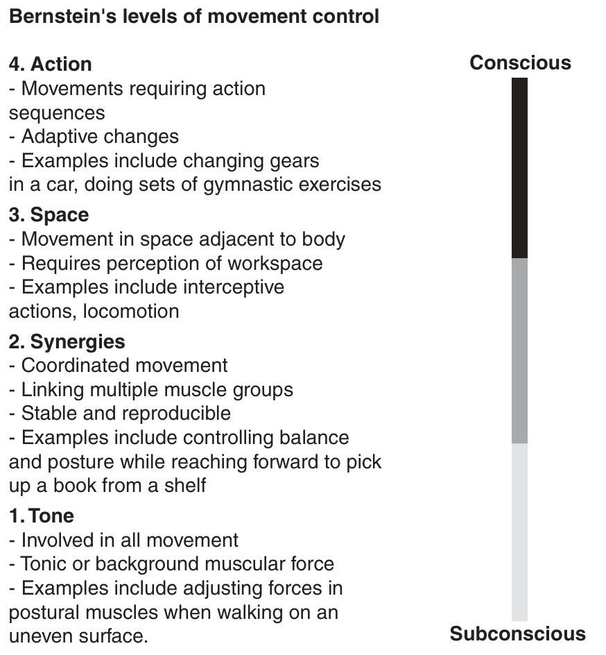
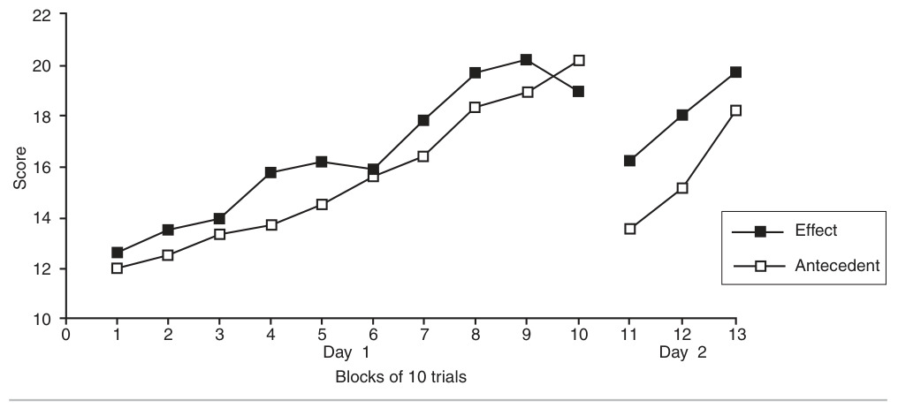

Chương 8 — Hướng dẫn bằng lời như ràng buộc thông tin
DÀN Ý CHƯƠNG
Hiệu quả của các chiến lược giao tiếp bằng lời nói
Có tồn tại mẫu hình vận động tối ưu không? Việc học có phải là một quá trình có ý thức không?
Giao tiếp bằng lời nói như một ràng buộc thông tin tạm thời
Tiêu điểm chú ý và giao tiếp bằng lời nói
Học vận động tiềm ẩn Tiêu điểm chú ý bên trong so với bên ngoài Hệ quả đối với học khám phá
Tương tác giữa hướng dẫn bằng lời nói và phản hồi
Giao tiếp bằng lời nói và các rối loạn vận động
Tóm tắt
CHƯƠNG 8 CHƯƠNG 8

Theo truyền thống, người thực hành đã dùng hướng dẫn để thúc đẩy một kỹ thuật hay mẫu hình vận động tối ưu có thể không nhất thiết phù hợp với động lực học nội tại của mỗi người học. Trong chương này, bạn sẽ thấy rằng có nhiều tình huống mà hướng dẫn bằng lời nói và phản hồi liên quan đến vận động thực sự có thể cản trở người học. Hướng dẫn bằng lời nói tương thích đến mức nào với nguyên tắc ghép nối thông tin–vận động đã thảo luận trong các chương 6 và 7? Ví dụ, khi luyện tập cú vung gậy golf, việc hướng dẫn bằng lời cho người học tập trung vào chuyển động của chi, của cây gậy, hay có thể là quỹ đạo dự định của quả bóng có giúp ích không? Trong chương này, chúng ta xem xét cách người thực hành có thể dùng hướng dẫn bằng lời nói, phản hồi và các chiến lược định hướng chú ý khác để giúp người học tiếp thu kỹ năng.
Hiệu quả của các chiến lược giao tiếp bằng lời nói
Người thực hành thường dùng giao tiếp bằng lời nói để hướng người học tới cách thực hiện tối ưu một kỹ năng hoặc để động viên trong luyện tập. Khi nhớ lại một huấn luyện viên hay giáo viên thể thao cũ, điều chúng ta thường nhớ là một câu nói quen thuộc hay một lời động viên truyền cảm hứng. Cách nhìn truyền thống về học vận động có xu hướng nhấn mạnh việc truyền tải thông tin bằng lời từ người thực hành sang người học nhằm mục đích duy trì (xem chương 1). Sự tập trung này có thể giải thích tại sao các chiến lược sư phạm như đưa ra hướng dẫn bằng lời nói, phản hồi và trình diễn mẫu lại phổ biến đến vậy trong số nhiều người thực hành. Người thực hành sử dụng hầu hết các hình thức giao tiếp bằng lời nói một cách hiệu quả như thế nào? Ví dụ, một số loại hướng dẫn có lợi hơn hay kém hơn đối với các loại người học khác nhau? Người thực hành nên cung cấp bao nhiêu phản hồi trong một thời điểm? Có những hướng dẫn lý thuyết nào sẵn có để giúp người thực hành lên kế hoạch cách thức và thời điểm cung cấp phản hồi tốt nhất?
Điểm mấu chốt là, trong tiếp cận dựa trên rào cản/giới hạn, người ta nhấn mạnh nhiều hơn vào cách người học khai thác các quá trình tự tổ chức trong hệ thống vận động để khám phá và tiếp thu các chế độ phối hợp liên quan cho các hành động phức tạp. Với góc nhìn phi truyền thống này, rõ ràng là người thực hành cần suy nghĩ lại về cách các chiến lược hướng dẫn bằng lời nói có thể giúp tạo điều kiện cho quá trình đó. Chúng ta bắt đầu thảo luận bằng cách xem xét hai câu hỏi lý thuyết liên quan đến hiểu biết của chúng ta về quá trình tiếp thu kỹ năng: Có tồn tại mẫu hình vận động tối ưu không, và việc học ở mức độ nào là một quá trình có ý thức?
Có tồn tại mẫu hình vận động tối ưu không?
Giao tiếp bằng lời nói cho phép người thực hành nhanh chóng truyền đạt cho người học một hình ảnh tinh thần về cách họ nên thực hiện chuyển động mong muốn trong luyện tập. Tuy nhiên, như đã lưu ý trong chương 4, một nhiệm vụ chuẩn bị quan trọng đối với người thực hành là xác định các khuynh hướng phối hợp đã tồn tại trong mỗi người. Mối quan hệ giữa các ràng buộc nhiệm vụ và động lực học nội tại của người học là then chốt. Nếu động lực học của nhiệm vụ phù hợp với động lực học nội tại của người học thì việc học có khả năng diễn ra nhanh chóng. Nếu có sự khác biệt giữa động lực học nhiệm vụ và động lực học nội tại của người học thì tốc độ học có thể chậm hơn và đòi hỏi nhiều nguồn lực hơn từ phía người thực hành. Hãy nhớ rằng chuyển giao tiêu cực có thể xảy ra khi động lực học nội tại của người học cạnh tranh với động lực học của nhiệm vụ. Hệ quả là người thực hành nên từ bỏ chiến lược hướng dẫn bằng lời cho người học tái tạo một kỹ thuật được lý tưởng hóa, thay vào đó nên hiểu làm thế nào người học có thể khám phá tốt nhất một giải pháp vận động cụ thể khai thác động lực học nội tại độc đáo của họ. Với sự giúp đỡ của người thực hành, mỗi cá nhân có thể khám phá một mẫu hình tối ưu về mặt sinh cơ học phù hợp với mình.
Từ góc nhìn này, thuật ngữ tối ưu cần được giải thích lại, vì nó không phổ biến (tức là không mang tính phổ quát) trong số tất cả người học, và nó không chỉ một mẫu hình vận động chung mà mọi người học nên hướng tới. Thay vào đó, mẫu hình vận động tối ưu cho mỗi người học là mẫu hình phối hợp với động lực học nội tại của hệ thống vận động cụ thể của người đó và cho phép đạt được mục tiêu nhiệm vụ một cách chính xác, kịp thời và tiết kiệm năng lượng. Tóm lại, mẫu hình vận động tối ưu là mẫu hình đáp ứng các ràng buộc đối với từng người học khi họ đạt được thành công một kết quả thực hiện cụ thể, dự định (Button, Davids, & Schöllhorn, 2006; Davids, Glazier, Araújo, & Bartlett, 2003).
Việc học có phải là một quá trình có ý thức không?
Các lý thuyết tiếp thu kỹ năng truyền thống cũng cho rằng việc học là kết quả của việc tiếp thu và lưu trữ các biểu diễn phù hợp hơn về kỹ năng vận động (Schmidt, 1975). Ngược lại, tiếp cận dựa trên rào cản/giới hạn không nhấn mạnh nhiều vào việc xây dựng các cấu trúc nhận thức hỗ trợ hồi tưởng trí nhớ. Thay vào đó, vận động phối hợp được xem như một thuộc tính nổi lên của các biến then chốt (bao gồm một số hướng dẫn bằng lời từ người thực hành) giúp người học khai thác dfs của hệ thống vận động để rút ra các giải pháp phối hợp (Hodges & Franks, 2002). Bất kể cách giải thích lý thuyết nào được ưa chuộng, vẫn đáng xem xét liệu người học có cần nhận biết rằng tiếp thu kỹ năng đang diễn ra hay không. Nói cách khác, việc học ở mức độ nào là một quá trình có ý thức?
Bernstein (1967) đã đưa ra cái nhìn sâu sắc về vấn đề này bằng cách đề xuất quan điểm coi người học là một hệ thống vận động tích hợp với ít nhất bốn mức kiểm soát tổ chức (xem hình 8.1). Theo Bernstein, bốn mức kiểm soát được dùng để lắp ráp các chuyển động là mức trương lực, mức hiệp đồng, mức không gian và mức hành động. Bốn mức kiểm soát này được phân biệt theo thứ bậc trong CNS, với các mức kiểm soát dẫn đầu nằm ở các tầng vỏ não của CNS (để xem xét chi tiết, xem Beek, 2000). Mức trương lực cung cấp mức kiểm soát thấp nhất
Hình 8.1: Bernstein (1967) đã đề xuất quan điểm coi người học là một hệ thống vận động tích hợp với ít nhất bốn mức độ phức tạp về tổ chức.
Điều chỉnh từ N.A. Bernstein, 1967, The control and regulation of movements (London: Pergamon Press).
Các mức kiểm soát vận động của Bernstein
4. Hành động - Các chuyển động đòi hỏi chuỗi hành động - Những thay đổi thích ứng - Ví dụ gồm chuyển số trên ô tô, thực hiện các bài tập thể dục dụng cụ theo hiệp
3. Không gian - Chuyển động trong không gian kề cơ thể - Đòi hỏi tri giác về không gian làm việc - Ví dụ gồm các hành động chặn bắt, di chuyển
2. Hiệp đồng - Chuyển động phối hợp - Liên kết nhiều nhóm cơ - Ổn định và có thể lặp lại - Ví dụ gồm kiểm soát thăng bằng và tư thế khi với tay về phía trước để lấy một cuốn sách từ kệ
1. Trương lực - Tham gia vào mọi chuyển động - Lực cơ trương lực hoặc nền - Ví dụ gồm điều chỉnh lực ở các cơ tư thế khi đi trên bề mặt không bằng phẳng.
Có ý thức
Tiềm thức

liên quan đến lực cơ trương lực và lực cơ nền cơ bản gắn với vận động. Mức hiệp đồng tham gia vào việc tích hợp các nhóm cơ thành hành động phối hợp. Mức không gian tập trung vào sự phối hợp các chuyển động liên quan đến vật thể, bề mặt và cá nhân trong môi trường. Cuối cùng, mức kiểm soát cao nhất, mức hành động, được dùng để lập kế hoạch và tạo ra các chuỗi chuyển động cũng như điều chỉnh chuyển động trong những môi trường động.
Mô tả của Bernstein (1967) về các mức tổ chức khác nhau trong CNS gợi ý rằng, điển hình là các mức dẫn đầu của CNS không tham gia vào quá trình tiếp thu cơ bản các kỹ năng tri giác–vận động. Chỉ mức kiểm soát dẫn đầu, mức hành động, xuất hiện trong việc sử dụng thông tin bằng lời nói và các hướng dẫn tường minh trong lúc học. Theo Bernstein, CNS thực chất được chuyên biệt hóa để tiếp thu các kỹ năng tri giác–vận động theo cách tiềm ẩn (dưới ý thức). Sự chuyên biệt hóa này giúp giải thích cách trẻ sơ sinh có thể nhanh chóng tiếp thu các mẫu hình vận động cơ bản để kiểm soát tư thế, cầm lấy đồ chơi và ăn uống mà không cần hướng dẫn hay phản hồi bằng lời từ cha mẹ. Khái niệm học khám phá cũng phù hợp với gợi ý của Bernstein rằng học vận động hiệu quả hơn xảy ra thông qua việc hiểu rõ hơn mối quan hệ giữa đầu ra lực cơ và tác động lên các thuộc tính quan trọng của môi trường. Như tất cả chúng ta đều biết, quá trình tự nhiên của tiếp thu kỹ năng ở tuổi sơ sinh diễn ra khi trẻ tìm kiếm và khám phá các giải pháp nhiệm vụ phù hợp thông qua các hành vi vận động giải quyết vấn đề (Thelen & Smith, 1994).
Qua nhiều năm, các nhà lý thuyết có xu hướng coi nhẹ những quá trình học tự nhiên này, dù các quá trình này lại ở vị trí hàng đầu trong lý thuyết học vận động dựa trên tiếp cận dựa trên rào cản/giới hạn. Một số nghiên cứu sẽ được thảo luận tiếp theo gợi ý rằng chính những quá trình tiềm ẩn này cũng có thể tham gia vào quá trình luyện tập. Khi người học trở nên thành thạo hơn ở một nhiệm vụ vận động thông qua luyện tập, trách nhiệm kiểm soát phối hợp được chuyển giao cho các mức thấp hơn của CNS, cho phép người học khám phá động lực học tự tổ chức của hệ thống vận động. Việc yêu cầu người học hiểu các hướng dẫn bằng lời nói phức tạp về thực hiện kỹ năng, hoặc nhắc quá chi tiết đến chuyển động của các bộ phận cơ thể trong không gian, có khả năng huy động các tầng vỏ não trong CNS của người học trong lúc luyện tập. Điều này lần lượt làm gián đoạn quá trình điển hình của học vận động tiềm ẩn vốn khai thác khuynh hướng tự tổ chức ở các mức thấp hơn của CNS. Có một ngoại lệ cho quá trình này khi người thực hiện tiếp thu các kỹ năng thấm đẫm ý nghĩa văn hóa hoặc biểu tượng, chẳng hạn như học các động tác cách điệu trong múa, thể dục dụng cụ, võ thuật và trượt băng (Beek, 2000). Trong những tình huống này, nền tảng của chuyên môn chính là các quá trình mang tính tường minh cao về ý định và diễn giải khi thực hiện các mẫu hình vận động được cân nhắc kỹ lưỡng.
Giao tiếp bằng lời nói như một ràng buộc thông tin tạm thời
Dĩ nhiên, giao tiếp bằng lời nói không phải lúc nào cũng có hệ quả tiêu cực đối với người học. Hãy nhớ lại từ chương 3 rằng những thay đổi về năng lượng trong các mảng tri giác có thể cung cấp thông tin mà con người nhận biết trực tiếp để điều chỉnh hành động (Gibson, 1979). Nghĩa là, người học ghép nối chuyển động, chứ không phải lời nói, với các nguồn thông tin môi trường. Dù ban đầu người học có thể gặp khó khăn trong việc phát hiện các nguồn thông tin then chốt có thể hướng dẫn hiệu quả hành vi của mình, một cách mà người thực hành có thể giúp họ là cung cấp thêm thông tin để tạo điều kiện cho việc tìm kiếm thông tin cần thiết nhằm điều chỉnh vận động. Chúng ta có thể xem hướng dẫn và phản hồi bằng lời nói như những ràng buộc thông tin cụ thể mà người học dùng để khám phá các bất biến tri giác then chốt sẵn có để thu nhận trong môi trường. Ví dụ, khi thiếu thông tin đầy đủ, người thực hành có thể dùng hướng dẫn để làm rõ mục tiêu nhiệm vụ, cung cấp cho người học một lối tắt để bắt đầu khám phá các khu vực cụ thể (thay vì toàn bộ) của cảnh quan tri giác–vận động.
Như vậy, giao tiếp bằng lời nói có thể là một phương pháp mạnh mẽ để định hướng tiêu điểm chú ý của người học, tạo điều kiện cho các quá trình tự tổ chức (Wulf, McNevin, & Shea, 2001). Tuy nhiên, một cân nhắc quan trọng đối với người thực hành là mức độ mà người thực hiện học cách dựa vào giao tiếp bằng lời nói trong luyện tập để tái tạo một hành động nhất định. Hãy nhớ rằng từ góc nhìn tiếp cận dựa trên rào cản/giới hạn, mục tiêu của người học không phải là tái tạo một mẫu hình vận động được lý tưởng hóa, mà là độc lập khám phá một giải pháp vận động phù hợp. Phản hồi bằng lời nói cũng khó có thể sẵn có trong mọi bối cảnh thực hiện, vì vậy người thực hành nên dùng giao tiếp bằng lời nói một cách tiết chế để ngăn sự phụ thuộc này hình thành (Hodges & Franks, 2002). Theo cách giải thích các phát hiện của Bernstein (1967), quá trình học diễn ra tự nhiên nhất theo cách tiềm ẩn, vì vậy việc người thực hành làm cho người học quá nhận thức về hành động của mình là ít có ý nghĩa, như chúng ta sẽ thấy tiếp theo.
Tiêu điểm chú ý và giao tiếp bằng lời nói
Việc truyền tải thông tin bổ sung dưới dạng hướng dẫn bằng lời nói hoặc trình diễn mẫu bằng hình ảnh đã là mối quan tâm chính của các nhà lý thuyết học vận động trong nhiều năm (Newell, Morris, & Scully, 1985). Cho đến nay, chúng ta đã lập luận rằng một quan điểm đang nổi lên trong tiếp cận dựa trên rào cản/giới hạn là giảm thiểu tính quy định, giao tiếp bằng lời nói trong luyện tập, đồng thời nhấn mạnh vai trò của nó trong việc định hướng người học khám phá các lĩnh vực then chốt của động lực học nhiệm vụ (Davids, Araújo, & Shuttleworth, 2005; Davids et al., 2003; Handford, Davids, Bennett, & Button, 1997). Thực tế, chúng ta có thể dùng quan điểm này để diễn giải lại nhiều ý niệm thông thường về học vận động.
Kết quả từ một loạt nghiên cứu so sánh bản chất và vai trò của học tiềm ẩn và học tường minh đã đặt nghi vấn về sự nhấn mạnh truyền thống vào việc người thực hành đưa ra quá nhiều hướng dẫn bằng lời nói, cũng như chiến lược biểu đạt hóa kiểm soát vận động của người học (tức là yêu cầu người học giải thích cách họ đang cố gắng điều chỉnh hành động của mình). Ví dụ, Masters, Law, và Maxwell (2002) đã lập luận cho việc học tiềm ẩn các hành động bằng cách lưu ý đến các tài liệu gần đây ủng hộ tầm quan trọng của tiêu điểm chú ý bên ngoài trong việc cung cấp hướng dẫn và phản hồi cho người học trong thể thao. Theo Masters và các cộng sự, việc người học phát triển nhận thức quá mức về chuyển động trong luyện tập là không phù hợp. Họ dẫn đến các nghiên cứu gần đây về phản hồi của Wulf và các cộng sự, cho thấy rằng trọng tâm định tính của phản hồi nhấn mạnh nhận thức về các bộ phận cụ thể của cơ thể có thể gây hại cho việc học (ví dụ, Wulf, McNevin, Fuchs, Ritter, & Toole, 2000). Trước khi thảo luận về khối công trình này, chúng ta cần bắt đầu bằng việc phân tích sự khác biệt giữa học tiềm ẩn và học tường minh, cũng như những hệ quả đối với luyện tập khám phá.
Học vận động tiềm ẩn
Theo Masters và các cộng sự (ví dụ, Abernethy et al. 2007; Masters et al., 2002; Maxwell, Masters, Kerr, & Weedon, 2001), nếu người học tiếp thu kỹ năng vận động một cách tường minh—bằng cách học một lượng lớn quy tắc và tri thức bằng lời nói về cách thực hiện các chuyển động ấy—họ sẽ mặc định chuyển sang một kiểu kiểm soát có ý thức, trong đó chuyển động được kiểm soát có chủ đích và mang tính nhận thức, và người học biểu đạt bằng lời các chiến lược kiểm soát của mình. Nghiên cứu đã chỉ ra rằng kiểu kiểm soát nhận thức–vận động này dễ bị xáo trộn hơn bởi các yếu tố xen kẽ như lo âu, nhận thức và cảm xúc (ví dụ, Masters, 1992). Một cách tiếp cận tốt hơn cho người thực hành là tránh việc tiếp thu thông tin bằng lời nói trong luyện tập bằng cách nhấn mạnh các kỹ thuật học vận động tiềm ẩn.
Học vận động tiềm ẩn xảy ra khi các cá nhân không được tiếp xúc chính thức với hướng dẫn bằng lời nói về cách thực hiện một chuyển động theo một cách thức cụ thể (Shea, Wulf, Whitacre, & Park, 2001). Masters và các cộng sự (2002) đề xuất rằng việc quá tải người học với hướng dẫn bằng lời nói khiến họ đầu tư quá nhiều công sức vào việc tiếp thu tri thức bằng lời nói, điều có thể cản trở trình tự các mệnh lệnh vận động dùng để kiểm soát chuyển động. Thay vào đó, họ nhấn mạnh việc sử dụng các chiến lược phi lời nói để truyền đạt thông tin cho người học, chẳng hạn như dùng ẩn dụ cho các mẫu hình vận động (xem Tiêu điểm nghiên cứu).
Tiêu điểm nghiên cứu
DÙNG ẨN DỤ ĐỂ THÚC ĐẨY HỌC VẬN ĐỘNG TIỀM ẨN
Liao & Masters (2001) đã chứng minh hiệu quả của việc dùng ẩn dụ nhằm thúc đẩy học vận động tiềm ẩn ở những người học đang luyện một cú vợt bóng bàn. Họ hướng dẫn một nhóm ẩn dụ tưởng tượng một tam giác vuông và vung vợt bóng bàn lên dọc theo cạnh huyền trong lúc đánh bóng, từ đó tạo ra một mẫu hình vận động phù hợp. Nhiệm vụ yêu cầu người tham gia đánh một quả bóng do máy phát tới một mục tiêu trên mặt bàn bóng bàn. Nhóm đã thực hiện 300 lần luyện tập. Độ chính xác của nhóm ẩn dụ được so sánh với nhóm tiềm ẩn, nhóm luyện tập trong khi lặp lại các dãy số, và nhóm tường minh, nhóm được cung cấp 12 hướng dẫn để thực hiện cú vợt đúng cách.
Kết quả trong hình 8.2 cho thấy nhóm ẩn dụ ít nhất cũng làm tốt như nhóm học tiềm ẩn và vượt trội hơn nhóm học tường minh. Khi được yêu cầu tái hiện chuyển động trong điều kiện căng thẳng (bị người khác đánh giá) trong một thí nghiệm tiếp theo, nhóm ẩn dụ vẫn thực hiện tốt.
ỨNG DỤNG
Học qua ẩn dụ phổ biến trong nhiều môn thể thao và ở nhiều loại người học như một phương pháp giảm thời gian dùng lời nói để mô tả một mẫu hình vận động. Vì lý do này, học qua ẩn dụ có thể yêu cầu người học tạo ra các hình dạng bằng chuyển động của chi để mô phỏng hướng không gian của các mẫu hình vận động cụ thể. Chẳng hạn, trong bơi, thay vì mô tả chi tiết một mẫu hình vận động, nhiều người thực hành dùng ẩn dụ để giúp hình dung các mẫu hình vận động cần thiết khi học một kiểu bơi mới. Ví dụ, động tác tay của bơi ếch giống như dùng hai bàn tay tạo thành hình lỗ khóa trong nước. Tương tự, động tác chân của bơi ếch giống như hai nửa vòng tròn. Ở bơi tự do, nhiều người thực hành mô tả một mẫu hình chữ S trong các giai đoạn tóm, kéo và đẩy của cánh tay, và hình vây cá mập giúp hình dung tư thế khuỷu tay cao trong giai đoạn hồi phục. Tóm lại, học qua ẩn dụ làm giảm lượng thông tin kỹ thuật mà người thực hành phải truyền đạt bằng lời nói cho từng người học. Nó cũng tạo ra một tiêu điểm bên ngoài cho hướng dẫn và phản hồi.
Hình 8.2: Dữ liệu từ Liao và Masters (2001) cho thấy lợi ích của việc dùng ẩn dụ trong học một cú vợt bóng bàn.
In lại từ C. Liao và R.S.W. Masters, 2001, "Analogy learning: A means to implicit motor learning," Journal of Sports Sciences 19: 307-319, với sự cho phép của Taylor & Francis Ltd. http://www.informaworld.com
Khối
1 2 3 4 5 6 Chuyển giao Duy trì
Điểm
Ẩn dụ Tiềm ẩn Tường minh

Tiêu điểm chú ý bên trong so với bên ngoài
Abernethy và các cộng sự (2007) lưu ý rằng nghiên cứu về học tiềm ẩn và học khám phá đồng tình với những chỉ trích đối với tiêu điểm chú ý bên trong trong các tài liệu về hướng dẫn và phản hồi (ví dụ, Wulf et al., 2000; Wulf et al., 2001). Trong một loạt nghiên cứu, Wulf và các cộng sự (ví dụ, Shea & Wulf, 1999; Wulf et al., 2001; Wulf, Hoess, & Prinz, 1998; Wulf, Lauterbach, & Toole, 1999) đã cung cấp bằng chứng mạnh mẽ về tác hại của việc hướng sự chú ý của người học vào chuyển động của các chi. Họ nhận thấy rằng việc hướng chú ý vào tác động của chuyển động của người học lên môi trường (ví dụ, quỹ đạo quả bóng sau một cú đánh, tác động cắt của lưỡi dao trượt trên mặt băng) có thể hiệu quả hơn là hướng chú ý vào chuyển động của các chi (xem bảng 8.1 để có thêm ví dụ).
Wulf et al. (1998) yêu cầu người tham gia học giữ thăng bằng trên một bệ ổn định (stabilometer). Nhóm tiêu điểm bên trong tập trung vào chuyển động của bàn chân, còn nhóm tiêu điểm bên ngoài tập trung vào chuyển động của bệ bên dưới bàn chân. Các dấu mốc trên bệ tạo ra tiêu điểm chú ý bên ngoài vào tác động của chuyển động. Chỉ với thay đổi nhỏ này về tiêu điểm chú ý, nhóm tiêu điểm bên ngoài đã thể hiện việc học thăng bằng vượt trội so với nhóm tiêu điểm bên trong. Tính khả thi của tiêu điểm bên trong và bên ngoài khi học cú đánh gôn ngắn cũng dẫn đến những kết luận tương tự (Shea & Wulf, 1999; Wulf et al., 1999). Nhóm tiêu điểm bên trong được hướng dẫn chú ý vào chuyển động của các chi
Nhiệm vụ Vị trí của tiêu điểm chú ý Lợi ích của tiêu điểm bên ngoài Nghiên cứu
Thao tác trên máy mô phỏng trượt tuyết
Bàn chân (bên trong)
Bánh xe của bệ (bên ngoài)
Hiệu suất được nâng cao (↑biên độ chuyển động)
Duy trì kỹ năng tốt hơn
Wulf et al. (1998)
Cú đánh gôn ngắn Tay và chân (bên trong)
Đầu gậy (bên ngoài)
Độ chính xác của cú đánh được cải thiện cả trong luyện tập lẫn duy trì
Wulf et al. (1999)
Thăng bằng trên bệ ổn định
Bàn chân (bên trong)
Các dấu mốc đặt trước bàn chân (bên ngoài)
Thăng bằng được cải thiện và duy trì thăng bằng tốt hơn
Đa số người thực hiện ưa thích tiêu điểm bên ngoài
Wulf et. al. (2001)
Các nhiệm vụ đời sống hằng ngày với bệnh nhân tai biến mạch máu não
Chi được dùng trong nhiệm vụ (bên trong)
Vật cần thao tác (bên ngoài)
Thời gian chuyển động ngắn hơn
Vận tốc đỉnh giảm
Fasoli et al. (2002)
Cú ném phạt bóng rổ
Chuyển động cổ tay (bên trong)
Rổ bóng (bên ngoài)
Hiệu suất được cải thiện
Tính kinh tế của chuyển động tốt hơn
Zachry et al. (2005)
Bảng 8.1: Tóm tắt kết quả từ các nghiên cứu về tiêu điểm chú ý và nhóm tiêu điểm bên ngoài tập trung vào tác động của chuyển động (quỹ đạo của đầu gậy).
Hệ quả đối với học khám phá
Mặc dù lợi ích của tiêu điểm chú ý bên ngoài đối với việc học đã được chứng minh rõ ràng trong các tài liệu, vẫn có rất ít nỗ lực giải thích kết quả này từ tiếp cận dựa trên rào cản/giới hạn. Bằng cách gộp các phát hiện này vào lợi ích của chiến lược học khám phá, lý thuyết hệ thống động lực cung cấp một khung khái niệm hữu ích để hiểu tác động của học tiềm ẩn và vai trò của tiêu điểm chú ý bên ngoài. Những lợi ích này bao gồm giảm nhẹ vai trò của sự quy định thông qua giao tiếp bằng lời nói, đặc biệt khi liên quan đến các bộ phận cụ thể của cơ thể, và việc cung cấp thời gian để tìm kiếm các mối quan hệ thiết yếu giữa ràng buộc của người thực hiện, ràng buộc môi trường và ràng buộc nhiệm vụ trong việc khám phá một mẫu hình vận động nhằm đạt được kết quả thực hiện mong muốn.
Xét chung lại, những phát hiện này ủng hộ tính hiệu quả tương đối của học khám phá so với các cách tiếp cận quy định, trong đó huấn luyện viên hướng dẫn người học theo từng bước một. Quan điểm dựa trên rào cản/giới hạn gợi ý cách người học có thể khai thác các quá trình tự tổ chức trong hệ thống vận động khi cố gắng lắp ráp một giải pháp phối hợp cho một mục tiêu nhiệm vụ nhất định. Thật thú vị khi lưu ý rằng các phát hiện của Masters và các cộng sự (2002) về học tiềm ẩn trùng khớp với kết quả thực nghiệm về vai trò của các quá trình tự tổ chức trong luyện tập dựa trên khám phá trên máy mô phỏng trượt tuyết trong các tài liệu về hệ thống động lực (ví dụ, Vereijken, van Emmerik, Whiting, & Newell, 1992). Có vẻ như việc nhấn mạnh tường minh vào học kỹ năng vận động thông qua thông tin bằng lời nói tạo ra một tiêu điểm quá hẹp cho từng người học. Điều này không cho phép họ có thời gian cần thiết để tìm kiếm giải pháp nhiệm vụ của riêng mình, trong khi việc áp dụng tiêu điểm tiềm ẩn lại mang đến những cơ hội ấy.
Các tài liệu về tầm quan trọng của tiêu điểm chú ý bên ngoài trong việc cung cấp phản hồi đồng tình với dữ liệu từ một nghiên cứu của Vereijken và Whiting (1990). Họ chỉ ra rằng những người học theo cách khám phá được tự do chú ý đến thông tin phản hồi về tác động của chuyển động lên môi trường vì họ không bị quá tải bởi các hướng dẫn nhiệm vụ. Các chiến lược khám phá giúp người tham gia học hiệu quả hơn so với hướng dẫn quy định về cách thực hiện các chuyển động giống như đi vòng cung (slalom). Cách giải thích này ủng hộ vai trò của học khám phá cũng phù hợp với dữ liệu từ hai nghiên cứu của Wulf và các cộng sự (2000), những nghiên cứu đã mở rộng hiểu biết về tác động đối lập của tiêu điểm chú ý bên trong và bên ngoài. Trong các nghiên cứu này, Wulf và các cộng sự chỉ ra rằng tiêu điểm chú ý bên ngoài không hiệu quả đơn giản chỉ vì nó làm phân tâm người học khỏi việc suy nghĩ về chuyển động của chính cơ thể mình; thay vào đó, lý do cho hiệu quả của nó phức tạp hơn nhiều.
Câu hỏi ban đầu được Wulf và các cộng sự (2000) xem xét là liệu một cách tiếp cận tâm lý áp dụng chiến lược phi nhận thức có giải thích được lợi ích của việc dùng tiêu điểm chú ý bên ngoài hay không (xem Singer 1985, 1988). Khi quan sát những người học cú thuận tay trong quần vợt, trước tiên họ nghiên cứu lợi thế của tiêu điểm bên ngoài vào tác động của chuyển động so với tiêu điểm bên ngoài không liên quan đến tác động của chuyển động. Họ hướng dẫn một nhóm chú ý vào quỹ đạo dự kiến của quả bóng rời khỏi vợt sau cú đánh thuận tay (nhóm tác động), trong khi nhóm kia được yêu cầu tập trung vào quỹ đạo của quả bóng đang bay tới (nhóm thông tin tiền đề). Trong cả hai trường hợp, tiêu điểm chú ý đều là bên ngoài và hướng vào chuyển động của quả bóng, dù chỉ một nhóm tập trung vào tác động của chuyển động. Dữ liệu trong hình 8.3 cho thấy tiêu điểm bên ngoài có thể có lợi hơn nếu được hướng vào tác động của chuyển động của người học thay vì vào các nguồn thông tin bên ngoài khác làm phân tâm khỏi chuyển động của họ (như đã từng được Singer đề xuất, 1985, 1988).
Wulf và các cộng sự (2000) đã nghiên cứu việc học trong hai điều kiện tiêu điểm chú ý bên ngoài liên quan đến tác động, trong một thí nghiệm về nhiệm vụ đánh gôn ngắn. Trong một điều kiện tiêu điểm bên ngoài, kỹ thuật chuyển động (quỹ đạo của đầu gậy) được nhấn mạnh, và trong điều kiện còn lại, tiêu điểm chú ý bên ngoài là quỹ đạo và mục tiêu của quả bóng. Wulf và các cộng sự giả định rằng nếu việc tập trung vào
Hình 8.3: Những dữ liệu này cho thấy tiêu điểm bên ngoài có thể có lợi hơn nếu được hướng vào tác động của chuyển động của người học thay vì hướng vào các nguồn thông tin bên ngoài khác.
In lại với sự cho phép của Research Quarterly for Exercise and Sport, Tập 71, Số 3, 229-239, Bản quyền 2000 bởi American Alliance for Health, Physical Education, Recreation and Dance, 1900 Association Drive, Reston, VA 20191.
Ngày 1 Ngày 2 1
Điểm
10 13 12 11 10 9 7 8 6 5 4 3 2 0
Các khối 10 lần thử
Tác động
Tiền đề

tác động của dụng cụ quan trọng hơn việc tập trung vào hình thức chuyển động, thì nhóm tập trung vào chuyển động của cây gậy lẽ ra phải hiệu quả hơn. Mặc dù cả hai nhóm đều cho thấy hiệu suất được cải thiện nhờ luyện tập, kết quả một lần nữa cho thấy rằng các hướng dẫn hướng sự chú ý của người học vào một tác động của dụng cụ đã nâng cao việc học nhiệm vụ của họ. Thêm vào đó, lợi ích của việc tập trung vào tác động của chuyển động liên quan đến kỹ thuật được quan sát ngay từ giai đoạn đầu của luyện tập.
Hầu hết các nghiên cứu đã xem xét sự khác biệt giữa tiêu điểm chú ý bên trong và bên ngoài bằng cách dùng các thước đo kết quả thực hiện (ví dụ, độ chính xác của chuyển động hoặc điểm sai số) làm biến phụ thuộc chính. Zachry, Wulf, Mercer, và Bezodis (2005) mở rộng những phát hiện này sang phân tích điện cơ (EMG) về chuyển động. Trong nghiên cứu này, những người chơi thực hiện cú ném phạt bóng rổ trong khi các nhà nghiên cứu theo dõi hoạt động điện trong cơ của cánh tay ném. Dữ liệu cho thấy người chơi ném chính xác hơn khi dùng tiêu điểm chú ý bên ngoài. Thêm vào đó, hoạt động EMG ở cơ nhị đầu và cơ tam đầu của cánh tay ném thấp hơn khi dùng tiêu điểm bên ngoài so với tiêu điểm bên trong. Zachry và các cộng sự lập luận rằng hoạt động EMG thấp hơn báo hiệu tính kinh tế của chuyển động cao hơn và sự giảm nhiễu.
Tóm lại, có vẻ như tiêu điểm bên ngoài trong hướng dẫn và phản hồi cho phép các quá trình tự tổ chức hỗ trợ việc học và thực hiện hiệu quả hơn.
Sự tương tác giữa hướng dẫn bằng lời nói
và phản hồi
Nghiên cứu thực nghiệm và các ví dụ thực tiễn ủng hộ lợi ích của cách tiếp cận học tiềm ẩn nhấn mạnh việc cung cấp không thường xuyên các giao tiếp bằng lời nói với tiêu điểm bên ngoài. Tuy nhiên, trong chương này chúng ta thường dùng thuật ngữ hướng dẫn và phản hồi thay thế cho nhau. Có thể rằng mỗi loại giao tiếp bằng lời nói có tác động khác nhau và tương tác lên hành vi. Hãy xem xét kỹ hơn cách bản chất của thông tin mà người thực hành cung cấp có thể ảnh hưởng đến việc học.
Trong một nhiệm vụ phối hợp hai tay, Lee, Blandin, và Proteau (1996) đã chứng minh mặt tích cực của các ràng buộc hướng dẫn đối với động lực học phối hợp. Khi tần số chuyển động hai tay được tăng lên, một nhóm người tham gia được hướng dẫn duy trì mẫu hình phản pha. Nhóm kia được bảo không can thiệp nếu họ cảm thấy mẫu hình phản pha đang chuyển sang mẫu hình đồng pha. Hướng dẫn của nhóm này trùng với hướng dẫn mà Kelso (1981, 1984) đưa ra trong công trình ban đầu của ông về phối hợp hai tay (xem Tiêu điểm nghiên cứu, chương 2). Nhóm không can thiệp đã ủng hộ các phát hiện của Kelso với những chuyển đổi tự phát sang chế độ đồng pha khi tần số tăng.
Tuy nhiên, nhóm được hướng dẫn duy trì chế độ phản pha đã có thể giữ mẫu hình 180° trong thời gian dài hơn. Vì vậy, các hướng dẫn được đưa ra trước khi luyện tập có thể là một phương tiện hiệu quả để lấn át các xu hướng động lực vốn có của hệ thống vận động trong việc điều chỉnh mẫu hình vận động theo yêu cầu nhiệm vụ.
Tuy nhiên, Hodges và Franks (2001) đã đặt nghi vấn về sự khôn ngoan của việc cung cấp một số loại hướng dẫn bằng lời nói cho người học. Họ quan tâm đến việc hướng dẫn và các loại phản hồi khác nhau có tương tác với nhau trong luyện tập hay không. Trong thí nghiệm của họ, người tham gia ở bốn nhóm được yêu cầu di chuyển hai cần điều khiển để tạo ra một mẫu hình tròn trên màn hình máy tính. Một nhóm nhận hướng dẫn bằng lời nói về cách tạo vòng tròn và phản hồi cụ thể về hình dạng họ đang tạo ra (liên quan đến mục tiêu nhiệm vụ). Một nhóm khác nhận hướng dẫn bằng lời nói và phản hồi chung liên quan đến chuyển động đồng thời của các chi. Hai nhóm còn lại không nhận hướng dẫn và chỉ nhận phản hồi cụ thể hoặc chung.
Kết quả cho thấy phản hồi liên quan đến mục tiêu nhiệm vụ có lợi hơn thông tin đồng thời về chuyển động của chi. Thêm vào đó, so với một nhóm tương đương không được hướng dẫn, nhóm được hướng dẫn tạo vòng tròn cho thấy bất lợi về tốc độ tiếp thu. Có vẻ như các hướng dẫn đã cản trở khả năng của người học trong việc dùng phản hồi đồng thời để tạo ra hình dạng yêu cầu. Những nghiên cứu này cho thấy khi học các mẫu hình phối hợp phức tạp, hướng dẫn và phản hồi chi tiết không phải lúc nào cũng cần thiết và có thể lãng phí thời gian luyện tập quý báu. Điều thú vị là nhóm không được hướng dẫn cho thấy tính biến thiên cao hơn, cho thấy nhóm này ban đầu tham gia tích cực hơn vào việc phá vỡ các mẫu hình đã thiết lập và tìm kiếm những hành vi có chức năng mới.
Những phát hiện này ủng hộ kết quả của một nghiên cứu trước đó của Green và Flowers (1991), nghiên cứu cho thấy hướng dẫn bằng lời nói có thể cản trở việc tạo ra chuyển động. Người học được yêu cầu bắt một vật trên màn hình máy tính bằng một con trỏ liên kết với cần điều khiển. Một nhóm nhận hướng dẫn trước khi luyện tập kém chính xác hơn (và ít biến thiên hơn) so với nhóm học không có hướng dẫn. Theo các tác giả, hệ quả là hướng dẫn bằng lời nói đơn giản chỉ làm tăng tải trọng chú ý của người học trong một số nhiệm vụ, từ đó làm gián đoạn khả năng tập trung của người học vào việc đáp ứng các ràng buộc nhiệm vụ.
Những phát hiện này gợi ý rằng người học không cần những hướng dẫn quá cụ thể về mẫu hình vận động. Thay vào đó, sự thành công của nhóm định hướng theo mục tiêu nhiệm vụ và nhóm không được hướng dẫn trong việc tìm ra các hành vi vận động phù hợp cho thấy người học cần thời gian để tìm kiếm giải pháp của riêng mình. Hướng dẫn và phản hồi cùng lúc có thể là không cần thiết miễn là người học có một mục tiêu vận động rõ ràng. Trong một nghiên cứu mang tính ứng dụng hơn, Magill và Schoenfelder-Zohdi (1996) đã thao tác cả hướng dẫn lẫn tri thức về phản hồi thực hiện cho những người học kỹ năng thể dục dụng cụ. Cũng như trong thí nghiệm của Hodges và Franks (2001), hướng dẫn chỉ có lợi nếu chúng hướng người học đến thông tin mà họ có thể dùng để hoàn thành nhiệm vụ tốt hơn.
Do những lợi ích tạm thời về hiệu suất được quan sát thấy, rất có thể người thực hành bị lừa rằng phản hồi bổ sung là hiệu quả. Ví dụ, Mononen, Vitasalo, Kontinnen, và Era (2003) cho thấy những xạ thủ nhận phản hồi động học ở 100% số lần tiếp thu đã vượt trội hơn nhóm 50% và nhóm đối chứng sau một thời gian duy trì 2 ngày. Tuy nhiên, hiệu ứng hiệu suất được nâng cao này không kéo dài khi hiệu suất bắn của các nhóm được so sánh 10 ngày sau khi tiếp thu. Sau 10 ngày không có phản hồi, độ chính xác của họ đã giảm xuống mức tương tự như các nhóm khác trong nghiên cứu.
Tóm lại, có vẻ như việc cung cấp thêm hướng dẫn về cách thực hiện kỹ năng vận động thường không có ích khi phản hồi liên quan đến mục tiêu nhiệm vụ sẵn có một cách tự nhiên để ràng buộc hoạt động tìm kiếm của người học (Hodges & Franks, 2001). Hơn nữa, việc cung cấp cho người học hướng dẫn chi tiết trước nhiệm vụ và phản hồi đồng thời liên quan đến chuyển động thường có thể quá tải thông tin, đặc biệt trong các nhiệm vụ phức tạp với yêu cầu cao về không gian–thời gian. Thêm vào đó, tác động của việc đưa ra hướng dẫn bằng lời nói ở mỗi lần thử không kéo dài, và việc sử dụng phản hồi liên quan đến thực hiện với tần suất thấp hơn là đã đủ.
Giao tiếp bằng lời nói và rối loạn vận động
Một vấn đề đáng lưu ý liên quan đến giá trị tương đối của hướng dẫn bằng lời nói là những người học có biểu hiện khiếm khuyết trong phát triển phối hợp vận động. Ví dụ, Wallen và Walker (1995) lưu ý rằng những người thực hành điều trị trẻ mắc DCD sử dụng nhiều cách tiếp cận khác nhau do phạm vi triệu chứng rất rộng ở mỗi trẻ. Bất chấp gợi ý này, Niemeijer và các cộng sự (2003) nhận thấy các nhà trị liệu nhi khoa đưa ra nhận xét kiểu mệnh lệnh hoặc phản hồi thường xuyên hơn (trung bình 60 lần), thay vì áp dụng phong cách đặt câu hỏi, chia sẻ tri thức qua nhận xét nhằm gợi ra sự hiểu biết ở trẻ DCD (trung bình 21 lần) bị ảnh hưởng bởi các vấn đề phối hợp vận động. Mặc dù các tình trạng như DCD không liên quan đến bất kỳ dạng rối loạn lâm sàng hay thần kinh nào, nhiều nghiên cứu chỉ tập trung vào các khiếm khuyết trong xử lý nhận thức và lập kế hoạch chuyển động (Henderson, 1992). Vì vậy, thật dễ nghĩ rằng những giải thích bằng lời nói đơn giản và nhiều phản hồi từ nhà trị liệu có thể giúp người học hiểu rõ hơn về những gì được yêu cầu ở họ.
Tuy nhiên, ngày càng có vẻ hợp lý rằng sự tương tác phức tạp của các yếu tố góp phần gây ra rối loạn vận động seperti khiếm khuyết thị giác không thể dễ dàng được khắc phục chỉ bằng mệnh lệnh bằng lời nói của người thực hành (Johnston et al., 2002; Mon-Williams, Tresilian, & Wann, 1999; Sigmundsson, Hansen, & Talcott, 2003). Vì nền tảng của tiếp cận dựa trên rào cản/giới hạn là xem xét hệ thống vận động của con người như một hệ thống phức tạp, mang tính động lực, thì việc áp dụng triết lý này cho những người mắc DCD có vẻ phù hợp. Chúng tôi cho rằng các nguyên tắc về tìm kiếm có định hướng và khám phá có hướng dẫn được mô tả xuyên suốt cuốn sách này đều áp dụng được cho mọi người học, và chúng tôi tin rằng nghiên cứu hiện tại và tương lai trong lĩnh vực này sẽ ủng hộ lập luận của mình (để xem xét lại thực hành dựa trên bằng chứng cho DCD, xem Ayyash & Preece, 2003).
Tóm tắt
Giao tiếp bằng lời nói của người thực hành có vẻ là hình thức ràng buộc thông tin mạnh mẽ và trực tiếp nhất được dùng để thay đổi mẫu hình vận động. Tuy nhiên, nghiên cứu cho thấy hướng dẫn bằng lời nói có thể có cả tác động tích cực lẫn tiêu cực đến tiếp thu kỹ năng. Tiêu điểm chú ý và sự sẵn có của phản hồi liên quan đến kết quả đã được chứng minh là những yếu tố quan trọng trong việc điều hòa lợi ích mà người học có thể đạt được từ tìm kiếm có định hướng. Thêm vào đó, bản chất của nhiệm vụ cần thực hiện rất quan trọng, vì việc trình bày các luồng thông tin khác nhau có thể cản trở việc thực hiện các mẫu hình phối hợp phức tạp.
Sự tổng hợp giữa lý thuyết và các phát hiện thực nghiệm cung cấp một nền tảng vững chắc để hiểu tại sao học khám phá nên là nền tảng của luyện tập. Người thực hành nên dùng hướng dẫn bằng lời nói, chỉ dẫn và phản hồi một cách tiết chế và chỉ khi người học không thể thu nhận thông tin về mục tiêu nhiệm vụ bằng cách khác. Hodges và Franks (2002) gợi ý rằng "những nhiệm vụ nhấn mạnh hơn vào các yêu cầu nhận thức–vận động và có yêu cầu phản ứng phức tạp sẽ ít được lợi từ hướng dẫn tường minh về chi tiết của chuyển động, ít nhất là trong giai đoạn đầu của việc học" (tr. 801). Các phương pháp luyện tập tối ưu bao gồm nhiều cơ hội để người học khám phá cách khai thác các bậc tự do của hệ thống vận động vào các giải pháp phối hợp, với sự nhấn mạnh rất ít vào hướng dẫn bằng lời nói từ người thực hành. Cách tiếp cận như vậy báo hiệu một vai trò khác cho người thực hành, như chúng tôi đã gợi ý ở chương 4.
Trong chương 9, chúng ta thảo luận về thách thức sư phạm trong việc giảm sự phụ thuộc của người học vào hướng dẫn và phản hồi bằng lời nói, đặc biệt khi chúng liên quan đến chuyển động của các bộ phận cơ thể trong không gian. Câu hỏi đặt ra cho người thực hành là, làm thế nào để chúng ta tạo điều kiện cho các hoạt động tìm kiếm mà không quá lạm dụng hướng dẫn bằng lời nói? Một câu trả lời có thể nằm ở việc dùng các bản trình diễn video và các kỹ thuật mô hình hóa trực quan phổ biến khác để định hướng cho việc tìm kiếm giải pháp phối hợp phù hợp của người học.
CÂU HỎI TỰ KIỂM TRA
1. Hãy tư vấn cho những người thực hành kỹ năng vận động về cách thức và thời điểm họ nên cung cấp hướng dẫn nhiệm vụ cho người học.
2. Để tiếp thu kỹ năng đạt được mức tối ưu, người thực hiện có cần nhận thức rằng họ đang học các kỹ năng vận động không? Hãy đề cập đến độ phức tạp về tổ chức của CNS trong câu trả lời của bạn.
3. Hãy chọn một môn thể thao hoặc hoạt động thể chất và xác định một kỹ năng quan trọng để người học luyện tập. Tiếp theo, hãy lập danh sách các hướng dẫn huấn luyện cho người học dùng tiêu điểm chú ý bên trong truyền thống. Cuối cùng, hãy lập danh sách các hướng dẫn tương tự dùng tiêu điểm chú ý bên ngoài.
4. Hãy thảo luận về cách tiêu điểm chú ý điều hòa lợi ích mà người học đạt được từ hướng dẫn và phản hồi bằng lời nói. (Gợi ý: Hãy xem xét kinh nghiệm của người học, bản chất của các ràng buộc nhiệm vụ, sự sẵn có của phản hồi, v.v.)
5. Với một kỹ năng do bạn chọn, hãy xác định các ẩn dụ vận động hiệu quả có thể khuyến khích người học tìm kiếm và khám phá những khu vực khác nhau của cảnh quan nhận thức–vận động.
6. Tại sao một người thực hiện học bằng cách luyện tập lặp lại một kỹ năng mà không mắc lỗi lại có khả năng học kỹ năng đó một cách tiềm ẩn hơn?
ĐỌC THÊM
1. Abernethy, B., Maxwell, J.P., Masters, R.W.S., van der kamp, J., & Jackson, R. C. (2007). Attentional processes in skill learning and expert performance. In G. Tenenbaum & R. Eklund (Eds.), Handbook of Sport Psychology (3rd ed., pp. 245-265). New York: John Wiley & Sons.
2. Beek, P.J. (2000). Toward a theory of implicit learning in the perceptual- motor domain. International Journal of Sport Psychology, 31, 547-554.
3. Hodges, N.J., & Franks, I.M. (2002). Modelling coaching practice: the role of instruction and demonstration. Journal of Sports Sciences, 20, 793-811.
4. Wulf, G., Shea, C., & Park, J-H. (2001). Attention and motor performance: Preferences for and advantages of an external focus. Research Quarterly for Exercise and Sport, 72(4), 335-344.